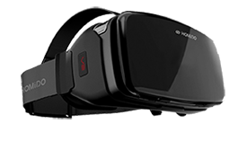

|

|
- Peut-être encore plus que l'Oculus Rift, le HTC Vive est le casque de réalité virtuelle le plus tendance.
- Les promesses sont alléchantes : plus qu'une expérience de VR classique, en position assise, l'appareil permet une immersion de tout le corps, grâce à la possibilité de se déplacer réellement sur plusieurs mètres et la présence de deux contrôleurs à reconnaissance de mouvements.
|
- Sony est un acteur très attendu sur le marché naissant de la réalité virtuelle, d'autant plus qu'il arrive après l'Oculus Rift et le HTC Vive.
- Le casque du constructeur japonais a, sur le papier, plusieurs avantages à faire valoir : d'une, il sort sur une console, la Playstation 4, extrêmement bien implantée dans les foyers (plus de 40 millions d'exemplaires vendus en mai 2016).
- Il est donc susceptible de toucher beaucoup de personnes. De deux, il est proposé à un prix inférieur à celui de la concurrence, mais qu'il faut tout de même relativiser.
|
Caractéristiques
|
- Définition: 1080 x 1200 px
- Fréquence d'affichage: 90 Hz
- Poids: 600 g
- Champ de vision: 110 °
- Prix: 699 €
|
- Définition: 1920 x 1080 px
- Fréquence d'affichage: 120 Hz
- Poids: 610 g
- champ de vision : 100°
- Prix: 390 €
|
Points Forts
|
- Le casque offrant la meilleur immersion jusqu'à présent.
- Une installation simple et rapide
- La précision des capteurs de mouvement
|
- Un casque au design agréable
- Une installation simple et rapide
- Puissance des composants et une haute résolution
- Un prix défiant toute concurence
|
Points Faibles
|
- Prix élevé
- nécéssite un grand espace
- mousse du casque qui conserve la chaleur
|
- précision des capteurs
- détecteur de mouvement vendu séparément
- synchronisation des images
|
|
|

|
- L'Oculus Rift est le premier casque de réalité virtuelle grand public pour PC à sortir sur le marché, après des années de développement. L'appareil se dote aujourd'hui de caractéristiques assez haut de gamme qui lui ermet de rivaliser au sommet.
|
- Le Samsung Gear VR est un des leaders du marché des casques de réalité virtuelle pour smartphone. Il possède un design simple et épuré disponible en noir ou blanc. Il s'appuie sur la technologie dévelloper sur le géant de la maison: l'Oculus rift.
|
Caractéristiques
|
- Définition: 1080 x 1200 px
- Fréquence d'affichage: 90hz
- Poids: 500g
- Champ de vision: 110°
- Prix: 420€
|
- Définition: 2560 x 1440 px
- Fréquence d'affichage: 60hz
- Poids: 318g (avec smarttphone)
- Champ de vision: 96°
- Prix: 130€
|
Points Forts
|
- Le casque offre un confort d'utilisation
- Une installation simple et rapide
- Une bonne qualité audio intégré
- Bonne colorimétrie
|
- Immersion réussie
- Réglage de la netteté pour s'adapter à la vue
- Sans fil
|
Points Faibles
|
- Absence de contrôleur de mouvement
- Dimension de l'écran trop juste
- Application de prise en charge qui manque de fonctionnalités
|
- Pixels visible
- Bords de l'image flou
- Compatible uniquement avec les Samsung Galaxie de série 6 ou plus
- Chauffe du smartphone très rapide
- Pas de réglage optique
|
|
|

|
- En 2016, le constructeur revient avec une version améliorée de sa première itération, le Zeiss VR One Plus, décrit comme plus léger, plus pratique et plus compatible que la version précédente.
|
- Homido est une société française qui a réussi à créer la sensation sur le marché de la réalité virtuelle. En effet, en 2016 le constructeur revient avec le Homido V2, une version qui corrige les défauts de son aîné.
|
Caractéristiques
|
- Définition: 1920 x 1080 px
- Fréquence d'affichage: 60hz
- Poids: 310g (avec smartphone)
- Champ de vision: 100°
- Prix: 129€
|
- Définition: 1920 x 1080 px
- Fréquence d'affichage: 60hz
- Poids: 340g (avec smartphone)
- Champ de vision: 100°
- Prix: 69.99€
|
Points Forts
|
- Tiroir pour insérer en sécurité son smartphone
- Grande compatibilité Android/ios
- Design elégant
|
- Confort d'utilisation
- Housse de protection
- Différente lentille pour s'adapter
- Application "Homido Center" très utile
|
Points Faibles
|
- Prix trop élevé
- Image déformé lors de mouvement de tête
- Application de prise en charge qui manque de fonctionnalités
|
- application "Homido Player" peu utile
|